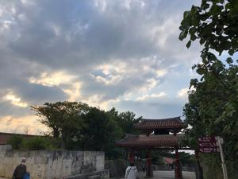
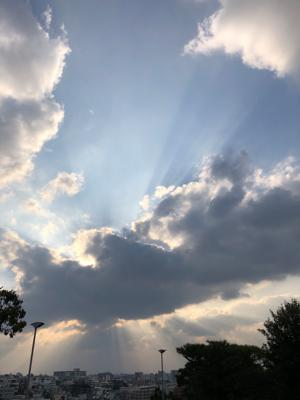

うるがいの話 ある日
最新: ９０分授業【うるがいの話 ある日】とは 一日だけのプログです
『うるがいの話』の最新一日だけのプログで、通信料が少なく経済的だ。カニの画像をクリックすると全ての日付が載る『うるがいの話』サイトを表示します
|
|
【うるがいの話】 うるがい(ｳﾙｶﾞｲ urugai)とは、『もずくがに』の名前でとても大きくなります。 |
|---|---|
|
|
【カミマヤーの話】 猫のことを方言でマヤーといいます。カミマヤー（kamimayaa）とは、神の猫のことです。 |
|
【タナガーの話】 たながー（ﾀﾅｶﾞｰtanagaa）とは手長えびのことで、何種類かあり大きいのは車 エビぐらいになります。 |

|
【ぶながぁの話】 ぶながー(bunagaa)とは、赤い髪の毛、赤い身体、そして身長は１ｍ２０ｃｍ ぐらい、川の蟹を食べているの目撃された。場所は沖縄県国頭郡大宜味村のと ある村僕の隣近所に住んでいる爺さんから、聞いた話です。 |
|
|
【ギーマの話】 ギーマ(giima)とは、山原の里山に咲くスズランに似た、 花を付けます。実は食べられます、 気が付くと口の周りが紫になっています。 |
2022年02月06日 (日）９０分授業
18:15

大学生になった時、驚いたのは授業時間が１時限あたり９０分だったこと。動
画研修動画を見る。なんと９０分（講師は長いので・・と言っていた）、分割
してみるのも面倒くさいので一気に視聴した。ふー、長かった、高校生のとき
将来なりたかった職業に、ドキュメント番組を作成する放送関係者になりたか
ったこともあり興味深く面白かった。アドビから『今すぐ Premiere Pro を
ご利用いただけます』とメールが届いたので、研修で利用する動画ソフトを少
し性能がいいディスクトップ１号（２０１５年１２月購入、ＳＳＤチューニン
グ済）にインストールする。すると
システムの互換性レポート
ビデオ Intel(R) HD Graphics 4400 ← 私のパソコンのグラフィックボード
ビデオドライバーはサポート対象外です
システム要件を満たさないまま使用すると、パフォーマンスの低下や不安定な
動作につながり、データがうしなわれる恐れがありますのでご注意ください。
フン、想定内だ！。しつこいことに、動画ソフトを起動する都度この画面が出
てくる。買うか、いいやつをと考える。せっかくなので、音が割れる課題に対
処すべく早速、動画編集ソフトを使って音が割れる動画映像（ＭＰ４）と、音
がいいほうの音声データ（ＷＡＶ）を合成することした。ただし、いつも利用
している楽譜ソフト（ＴｕｘＧｕｉｔａｒ）の音声データは画像との演奏時間
が、数秒短く音の出だしは同期をとっているが、暫くすると音声が遅く、画像
が先行してしまう。うーん、ここで工工四対応のために使い始めた新しい楽譜
ソフト（ＭｕｓｅＳｃｏｒｅ３）の動画（新しい音楽ソフトでも演奏動画をキ
ャプチャーすると音が割れる）と音声を合体させてみた。解決！、せっかくな
ので久々にユーチューブにアップした。１月２４日から、悩み続けたミッショ
ンが終了する。

『ニニ・ロッソ 夜空のトランペット』２分５０秒 トランペット演奏
１８時０７分 ビットコインの総資産 ￥１３、８９９↑